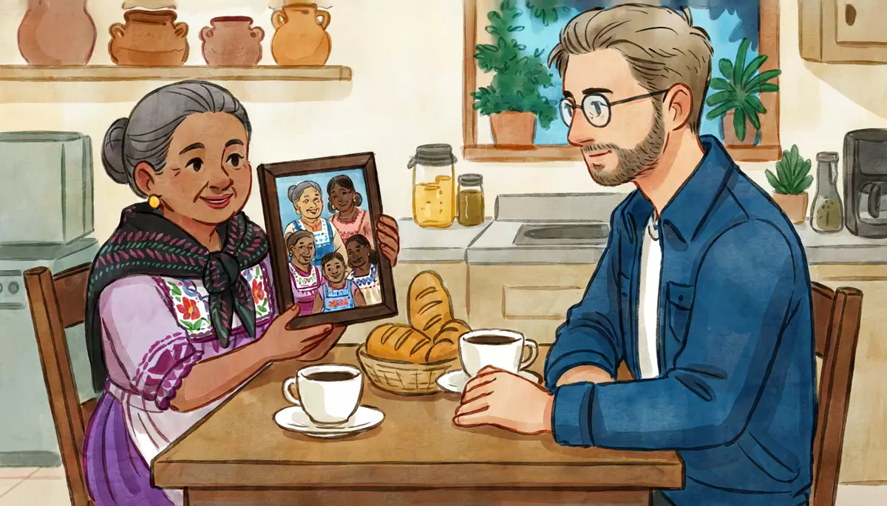

I can ask and answer simple questions about family.Goal of this lesson · CEFR Information exchange A1
Paso 1 de 8
EscuchaListen
Listen to the conversation, then answer the questions.

A few days later, after dinner. Doña Lupita shows Alex a photo of her family. Doña Lupita now says tú to Alex; Alex still says usted to her (respect for an older person)
First listen without the text. Press Escuchar todo and answer the first question. Then show the Spanish text and listen again.
ChooseHow many children does Doña Lupita have?
Your answer:
L
Doña LupitaAy, Alex, ¿te puedo hablar de tú? Ya eres como de la familia.Oh, Alex, can I call you tú? You're like family now.
A
Alex¡Claro que sí, doña Lupita!Of course, Doña Lupita!
L
Doña LupitaMira, esta foto es de mi familia. Tengo tres hijos: dos hijas y un hijo.Look, this photo is of my family. I have three children: two daughters and a son.
A
Alex¿Y cómo se llaman?And what are their names?
L
Doña LupitaMi hijo se llama Jorge. Es el papá de Diego. Mis hijas se llaman Carmen y Rosa.My son is called Jorge. He's Diego's dad. My daughters are called Carmen and Rosa.
A
Alex¿Y dónde viven?And where do they live?
L
Doña LupitaJorge y su esposa viven en Puebla. Carmen vive aquí en la ciudad, y Rosa vive en Los Ángeles.Jorge and his wife live in Puebla. Carmen lives here in the city, and Rosa lives in Los Angeles.
A
Alex¿Y cuántos nietos tiene, doña Lupita?And how many grandchildren do you have, Doña Lupita?
L
Doña LupitaCinco. Diego es el mayor: tiene veintiún años. Tiene una hermana, Fernanda, de quince.Five. Diego is the oldest: he's twenty-one. He has a sister, Fernanda, who's fifteen.
L
Doña Lupita¿Y tú, mijo? ¿Tienes hermanos?And you, dear? Do you have brothers and sisters?
A
AlexSí, tengo un hermano y una hermana. Mi hermano es mayor: tiene treinta y cinco años.Yes, I have a brother and a sister. My brother is older: he's thirty-five.
L
Doña Lupita¿Y tus papás?And your parents?
A
AlexMis papás viven en Chicago. Mi papá es ingeniero y mi mamá es maestra, como yo.My parents live in Chicago. My dad is an engineer and my mom is a teacher, like me.
L
Doña Lupita¡Qué bonito! ¿Y eres casado?How lovely! And are you married?
A
AlexNo, soy soltero.No, I'm single.
L
Doña LupitaBueno, todavía eres muy joven.Well, you're still very young.
1
ChooseListen again and answer.
Where do Diego's parents live?
How old is Alex's brother?
What do Alex's parents do?
Paso 2 de 8
FíjateNotice
Read how it works. Play the examples and repeat them aloud.
Tener: to have
tengo · tienes · tiene · tenemos · tienen
You already know tengo … años. Tener also says what (and who) you have: Tengo dos hermanos. Ustedes is "you" for more than one person (formal or informal: in Mexico it's always ustedes); it takes the same form as ellos, ellas (they). Other verbs work the same way for "they": -ar verbs end in -an (hablan, trabajan) and -er / -ir verbs in -en (viven, comen): Mis papás viven en Chicago.
tener
yo
tengo
tú
tienes
él, ella, usted
tiene
nosotros, nosotras
tenemos
ellos, ellas, ustedes
tienen
From the conversation:
Mira, esta foto es de mi familia. Tengo tres hijos: dos hijas y un hijo.Look, this photo is of my family. I have three children: two daughters and a son.
¿Y cuántos nietos tiene, doña Lupita?And how many grandchildren do you have, Doña Lupita?
¿Y tú, mijo? ¿Tienes hermanos?And you, dear? Do you have brothers and sisters?
To answer "no", just add no: No tengo hijos. No un / una is needed after no tengo.
Mi, tu, su: whose is it?
Possessives go before the noun and add -s for plural nouns: mi hijo → mis hijos. Su can mean his, her, their or your (usted / ustedes): the context tells you which. Nuestro (our) also changes for feminine: nuestra casa.
one thing
more than one
my
mi hermano
mis hermanos
your (tú)
tu papá
tus papás
his, her, your (usted), their
su esposa
sus hijas
our
nuestro abuelo / nuestra abuela
nuestros primos / nuestras primas
From the conversation:
Mi hijo se llama Jorge. Es el papá de Diego. Mis hijas se llaman Carmen y Rosa.My son is called Jorge. He's Diego's dad. My daughters are called Carmen and Rosa.
Jorge y su esposa viven en Puebla. Carmen vive aquí en la ciudad, y Rosa vive en Los Ángeles.Jorge and his wife live in Puebla. Carmen lives here in the city, and Rosa lives in Los Angeles.
¿Y tus papás?And your parents?
Spanish uses de for "'s": el papá de Diego = Diego's dad.
Family words: one, many, mixed
Plural: add -s after a vowel (hermano → hermanos) and -es after a consonant (papel → papeles). For a mixed group, Spanish uses the masculine plural: mis hermanos can be brothers, or brothers and sisters; mis hijos = my children (sons and daughters); mis papás = my parents (in Mexico; also mis padres).
From the conversation:
Sí, tengo un hermano y una hermana. Mi hermano es mayor: tiene treinta y cinco años.Yes, I have a brother and a sister. My brother is older: he's thirty-five.
Mis papás viven en Chicago. Mi papá es ingeniero y mi mamá es maestra, como yo.My parents live in Chicago. My dad is an engineer and my mom is a teacher, like me.
Paso 3 de 8
PracticaPractice
Do the exercises in order. They get freer as you go.
1
ChooseDoña Lupita's family. Choose the right word.
Jorge es el ___ de doña Lupita.
Diego es el ___ de doña Lupita.
Fernanda es la ___ de Diego.
Carmen y Rosa son las ___ de Diego.
2
Type the missing wordsComplete with the right form of tener.
Yo un hermano y una hermana.
I have a brother and a sister.
Mariana, ¿ hermanos?
Mariana, do you have brothers and sisters?
Doña Lupita cinco nietos.
Doña Lupita has five grandchildren.
Mi esposo y yo dos hijas.
My husband and I have two daughters.
¿Ustedes hijos?
Do you (all) have children?
3
Type the missing wordsComplete with mi, mis, tu, tus, su, sus or nuestra.
papás viven en Chicago. my
My parents live in Chicago.
Diego, ¿cómo se llama hermana? your
Diego, what's your sister's name?
Jorge vive en Puebla con esposa. his
Jorge lives in Puebla with his wife.
Doña Lupita, ¿ hijas viven aquí? your, usted
Doña Lupita, do your daughters live here?
casa es grande. our
Our house is big.
4
Listen and chooseThree people talk about their families. Listen and answer.
How old is Mariana's brother Pablo?
Show what they say
Mariana: Yo tengo dos hermanos: Lucía y Pablo. Lucía tiene treinta años y Pablo tiene diecinueve.
How many grandchildren does don Chuy have?
Show what they say
Don Chuy: Mi esposa y yo tenemos cuatro hijos, ya grandes, y siete nietos. ¡Imagínese en Navidad!
What do we know about Rocío?
Show what they say
Rocío: Soy divorciada y tengo dos hijos: Valentina, de doce años, y Mateo, de ocho. Viven conmigo.
5
Put the words in orderPut the words in order.
How many brothers and sisters do you have?
My parents live in Chicago.
My sister has a daughter.
6
Say it in SpanishNow you. Say it in Spanish (or type it).
Ask a friend if he or she has brothers and sisters.
¿Tienes hermanos?
Say you have a brother and a sister.
Tengo un hermano y una hermana.
Ask an older woman how many children she has (usted).
¿Cuántos hijos tiene?
Ask a friend what his or her sister's name is.
¿Cómo se llama tu hermana?
Say your parents live in Chicago.
Mis papás viven en Chicago.
Say you're single.
Soy soltero.
A woman says soltera.
7
Your own sentencesYour family.
Write 4–5 sentences about your family: who is in it, their names, ages, where they live and what they do.
Show a model answer
Tengo una hermana y dos hermanos. Mi hermana se llama Kate y tiene veintinueve años. Vive en Boston y es enfermera. Mis papás viven en Toronto. Mi papá tiene sesenta años y mi mamá tiene cincuenta y ocho.
Check your answer:
Paso 4 de 8
PalabrasWords
Listen to each word and repeat it. Then do the quick check.
La familiathe family
el papá, la mamádad, mom
los papásparents
el hijo, la hijason, daughter
los hijoschildren (sons and daughters)
el hermano, la hermanabrother, sister
el abuelo, la abuelagrandfather, grandmother
el tío, la tíauncle, aunt
el primo, la primacousin
el esposo, la esposahusband, wife
Estado civilmarital status
casado, casadamarried
soltero, solterasingle
divorciado, divorciadadivorced
el novio, la noviaboyfriend, girlfriend
Más palabrasmore words
mayorolder
menoryounger
el compadre, la comadreyour child's godparent / the parent of your godchild
Mariana posts a photo from Sunday lunch with her family in Puebla.
Social-media post
Domingo en Puebla
Hoytoday es domingo de comida familiar en la casa de mis abuelos. ¡Somos muchos! Mis papás, mis dos hermanos, mis tíos, mis primos… y los perrosdogs.
Mi abuela Elena tiene ochenta y dos años y cocinacooks el mejorbest mole de Puebla. Mi hermano Pablo es el menor: tiene diecinueve años y estudia música. Mi hermana Lucía está casadais married y tiene una hija, Sofi, de tres años. ¡Yo soy la tía favorita! 😄
Words with a dotted underline have a translation: tap or hover.
1
ChooseAnswer the questions about the text.
Where is the family lunch?
How old is Mariana's grandmother?
Who is Sofi?
Paso 6 de 8
CulturaCulture
Read about the culture behind the language.
Family first: Sunday lunch and compadres
In Mexico, the Sunday family lunch (la comida del domingo) is a fixed point of the week: grandparents, children and grandchildren around one table, often for hours, from about 2 or 3 p.m. Adult children commonly live with their parents until they marry or move for work, and grandparents often help raise grandchildren.
Compadrazgo ties families together. When a child is baptized, the parents choose a padrino and madrina (godparents), who promise to look after the child. From then on, the parents and godparents call each other compadre and comadre, a lifelong bond almost like family. There are also padrinos for weddings and quinceañeras, who help pay for something (the cake, the music, the rings).
Mexican households are getting smaller, but they are still bigger than in the US: 3.6 people per home on average in the 2020 census.
Elsewhere: In Spain you'll hear padres more than papás for "parents". In much of Latin America, compadre is also used between close male friends ("buddy").
Sources
INEGI, Censo de Población y Vivienda 2020: average of 3.6 occupants per inhabited home.
Instituto Cervantes, Plan curricular, «Saberes y comportamientos socioculturales: relaciones familiares».
1
ChooseCheck: what did you learn?
Diego's godmother and Diego's mother call each other…
Paso 7 de 8
Tu turnoYour turn
Now use it: do the role play, then write.
Role play: Show a family photo
At a café, Mariana asks about the family photo on your phone. Use tú. Talk about your own family (or invent one).
You
Say who is in the photo (Es mi familia).
Say how many brothers and sisters you have, their names and ages.
Say where your parents live and what they do.
Ask Mariana about her family.
React to what she says (¡Qué bonito!, ¿En serio?).
Mariana
Asks who is in the photo.
Asks about your brothers and sisters.
Asks about your parents.
Answers: two siblings, Lucía (married, one daughter) and Pablo (19).
Says she's the favorite aunt.
1. Listen to a model
One way the conversation could go. Listen, then try it yourself without looking.
M
Mariana¡Qué bonita foto! ¿Quiénes son?What a nice photo! Who are they?
A
AlexEs mi familia. Son mis papás y mis hermanos.It's my family. They're my parents and my brother and sister.
M
Mariana¿Cómo se llaman tus hermanos?What are your brother and sister called?
A
AlexMi hermano se llama Mike y mi hermana se llama Emily. Mike tiene treinta y cinco años y Emily tiene veintiocho.My brother is called Mike and my sister is called Emily. Mike is thirty-five and Emily is twenty-eight.
M
Mariana¿Y tus papás dónde viven?And where do your parents live?
A
AlexViven en Chicago. Mi papá es ingeniero y mi mamá es maestra. ¿Y tú? ¿Tienes hermanos?They live in Chicago. My dad is an engineer and my mom is a teacher. And you? Do you have brothers and sisters?
M
MarianaSí, dos: Lucía y Pablo. Lucía está casada y tiene una hija.Yes, two: Lucía and Pablo. Lucía is married and has a daughter.
A
Alex¡Ah! Entonces tú eres tía. ¡Qué bonito!Oh! So you're an aunt. How lovely!
2. Record yourself
Say your part aloud (pause the model after each of Mariana's lines), or answer the questions in the role card. Then play it back and compare.
3. Practice with an AI partner (optional)
Copy this prompt into ChatGPT or Claude, switch on voice mode, and have the conversation. It plays Mariana.
Stuck? Say «ayuda» and it gives you a hint in English, then carries on.
Finished? Say «terminamos» and it gives you feedback in English: what you did well, your mistakes, and useful phrases for next time.
Let's practice Spanish (Mexican Spanish, level A1). You are Mariana, 28, an architect from Puebla living in Mexico City, my friend from the language exchange. Use "tú".
We're at a café and I show you a family photo on my phone. About your family: your parents live in Puebla; you have a sister, Lucía (30, married, one daughter, Sofi, 3) and a brother, Pablo (19, studies music); your grandmother Elena (82) makes the best mole in Puebla.
Rules:
- Speak only Spanish, short turns (1-2 sentences), simple language for an A1 learner. Speak slowly and use very common words.
- Ask me who is in the photo, then about my brothers and sisters, their names and ages, where my parents live and what they do. One question at a time. When I ask about your family, answer in two short sentences.
- You play only this one person. Never speak as anyone else, and don't describe what other people say or do.
- If I make a mistake, don't stop me: repeat what I said correctly in your answer (for example: if I say "Mi hermana tiene treinta años y vive con su esposo", that's correct; if I say "Mis hermana es...", you say "Ah, tu hermana es...").
- Ask one follow-up question I may not expect: "¿Y quién es el mayor?" or "¿Tienes sobrinos?" (explain "sobrinos" = nieces and nephews if I don't understand).
- When I say "ayuda", step out of the role play for a moment: in English, give me a short hint about what I could say next, with one or two short Spanish options, then continue the role play where we were.
- When I say "terminamos", stop the role play and give me feedback in English: 3 things I did well, up to 3 mistakes with corrections, and 3 useful phrases for next time.
Start now: say "¡Qué bonita foto! ¿Quiénes son?"
Writing: My family
Write a short post about your family for the language-exchange group, like Mariana's: who is in your family, names, ages, where they live, what they do, and one fun detail.
40–70 words.
Show a model answer
Mi familia es pequeña. Mis papás se llaman Tom y Linda, y viven en Chicago. Mi papá es ingeniero y mi mamá es maestra. Tengo un hermano, Mike, y una hermana, Emily. Mike tiene treinta y cinco años y tiene dos hijos. Emily tiene veintiocho años y vive en Chicago. ¡Yo soy el tío favorito!
Check your text:
Paso 8 de 8
¿Lo logré?Did I do it?
Check yourself against the goal of the lesson.
Read each statement and be honest: anything marked casi or todavía no goes into Repaso so it comes back soon.
I can name the people in my family.
I can say how many brothers, sisters or children someone has, and ask.
I can say people's ages, where they live and what they do.
I can use mi, tu, su and their plurals.
I can understand someone talking simply about their family.